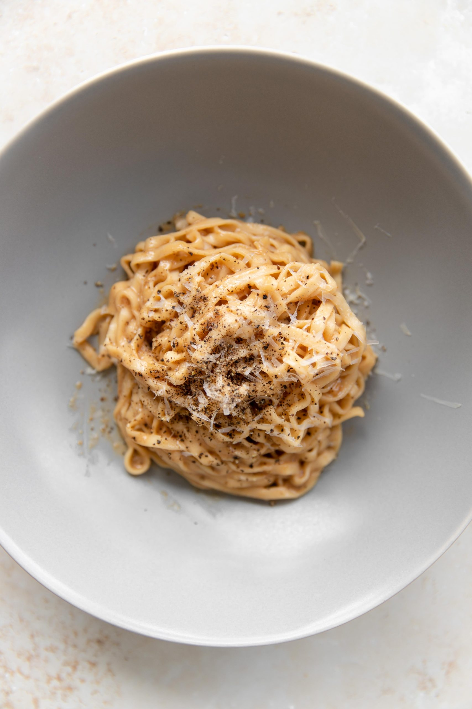

Ramen Cacio e Pepe

Description
Ok I'll be honest, this one is a little wild. This is for when you get home late night and your trying to impress your significant other but forgot that your broke. This is quick, easy, requires minimal prep, and ever better, not many dishes to clean after.
Ingredients
- 1 package of your favorite Instant Ramen
- 3 Tbl Butter
- 1/2 cup fresh grated Parmesean Cheese
- 1 Tbl fresh Ground Pepper
- Salt
- Remove ramen from packaging and cook just the noodles as the packaging states. Keep seasoning packet and discard any garnish/veggie packet included.
- When noodles are done pour out most of the cooking liquid, leaving only 1 tablespoon in pot.
- Add butter and Parm and miss agressively to form a sauce. No heat needs to be added if pot is still warm.
- Add seasonign packed and continue to mix, ad a drop of water if needed to loosen sauce.
- Add salt and pepper to taste. Garnish however you'd like.
Home